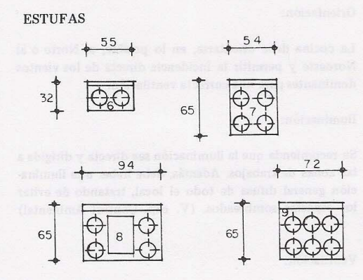
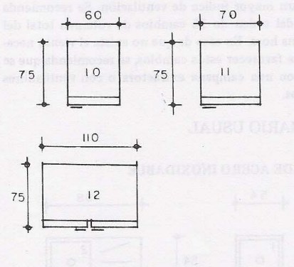
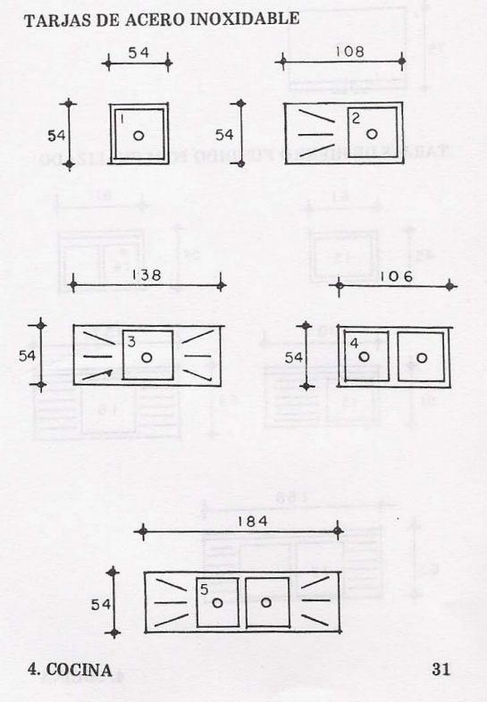
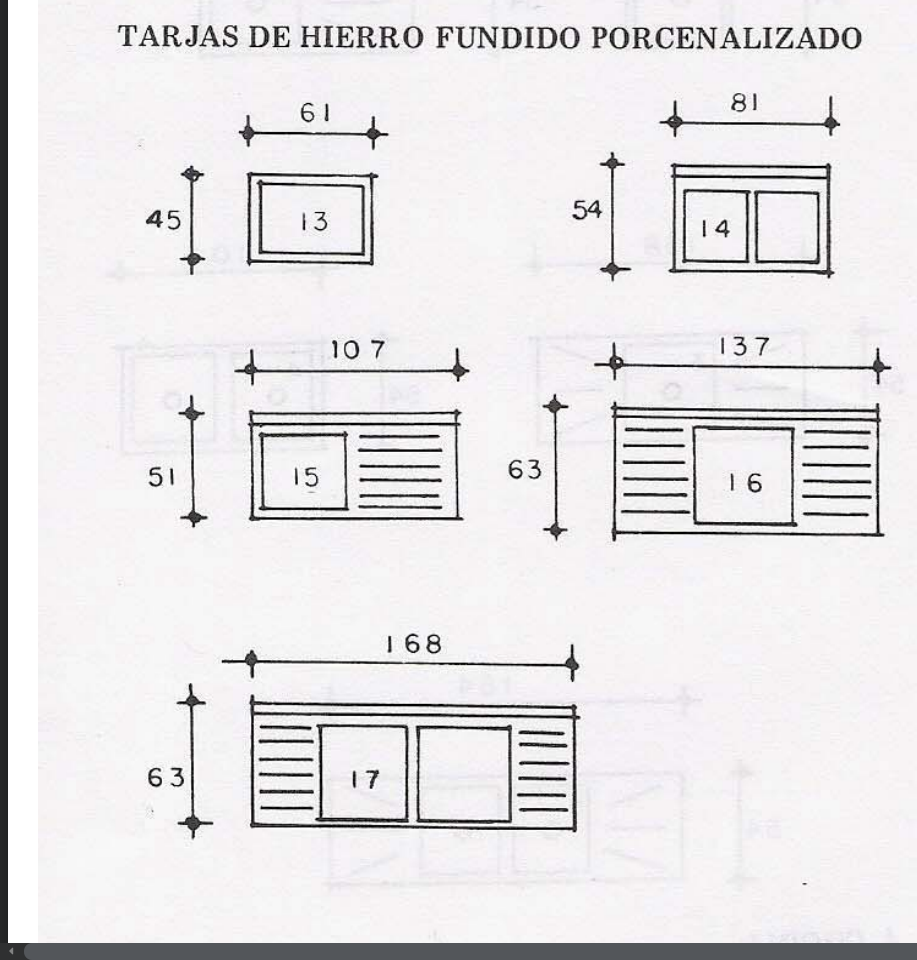

Tamaños de una estufa
Para estufa encontramos medidas bastantes pequeñas, una portable de 32 x 55 cm, de esta pequeña pasamos a
las estufas que fijas, encontramos una desde 54 x 65 cm el cual sería nuestro mínimo, se puede urilizar en el plano amueblado
pero se debería preguntar primero al cliente si le parece bien ese tamaño o preferirá comprar una más grande, por ejemplo
de 94 x 65 cm u otra de 72 x 65 que sería la que tendría maás hornillas si bien no es la mas larga
Se puede usar una estufa de 65 x 75 como la media que se debe de utilizar

Tamaños de un refrigerador
Encontramos una mediana de 70 x 75, que es la que usaremos a la hora de trazar nuestro plano amueblado
encontramos dos refrigeradores más, uno pequeño de 60 x 75 que será en caso el cliente la deseé de ese tamaño,
y encontraremos un refrigerador de dos hojas bastante más grande que los anteriores de 110 x 75

Tamaños de un lavaplatos o tarja de acero
Sí, así es también conocemos a los lavaplatos como tarjas, de estos hay dos grupos, el de lavaplatos de acero
inoxidable y el de hierro porcenalizado que lo analizaremos más adelante, hay que recalcar que se debe dejar una escuadra de 45 x 45 cm
donde se colocaran los platos a la hora de secarse, podemos tomar una medida de 1 metro de largo y 50 cm de ancho como una medida universal
pero aquí encontramos más tamaños en caso nuestro cliente deseé otro tipo y estilo de tarja, como vemos podemos usar en nuestro plano amueblado
el de 107 x 51 cm y como máximo el de 168 x 63 cm

Tamaños de un lavaplatos o tarja de hierro porcelanizado
Este tipo de tarjas por lo visto son de porcelana revesitdas de hierro, suelen ser más económicas y a su vez respecto a medidas
encontramos el tamaño universal de 1 metro x 50 cm, ahora bien, en su catálogo encontramos más tamaños que poco distan de los anteriores
por poner un ejemplo, encontramos una pequeña parecida a la anterior de 61 x 45 cm, podemos aproximar a 60 x 45 pero ya será decisión del arquitecto

Si quieres tener más información sobre los tamaños de los muebles te invitamos a que puedas acceder al siguiente link: Medidas de los muebles de una Sala.
Presiona el siguiente link para volverl al menú: Medidas de los muebles de una Sala.
Diseñado por Juan Daniel López Juárez